Префектура Оита · Усуки · история и еда
Каменные Будды Усуки: тысячелетние лики в скалах и монастырская кухня старого города
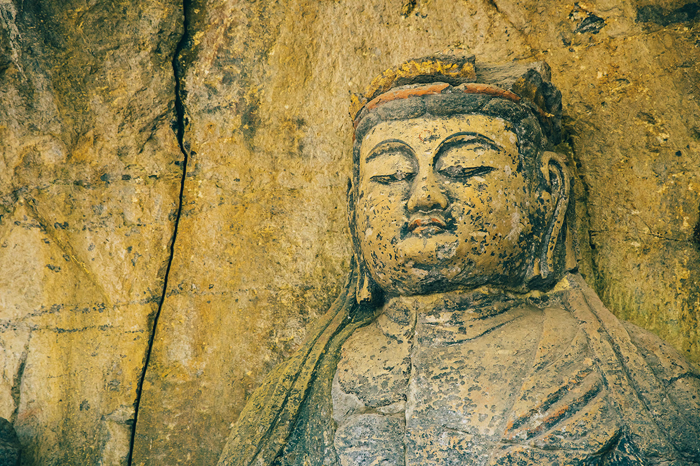
Усуки, город на восточном побережье префектуры Оита, рано принял буддизм, а в XVI–XIX веках жил торговлей. Эта история видна здесь и сегодня: в скалах за городом, на тихих улочках старого квартала и на столе у монаха, который сам готовит постную кухню.
Национальное сокровище
Будды, которые смотрят на деревню
Примерно в 15 минутах на машине от старого города, вглубь от моря, лежит деревня Фуката. Здесь в природных скалах высечено множество изваяний Будды. Больше тысячи лет они смотрят на жителей деревни. Серьёзно их начали изучать в конце эпохи Мэйдзи, в начале XX века, и тогда признали лучшими скальными рельефами Японии за красоту и размах. Сегодня все 61 статуя внесены в список национальных сокровищ.
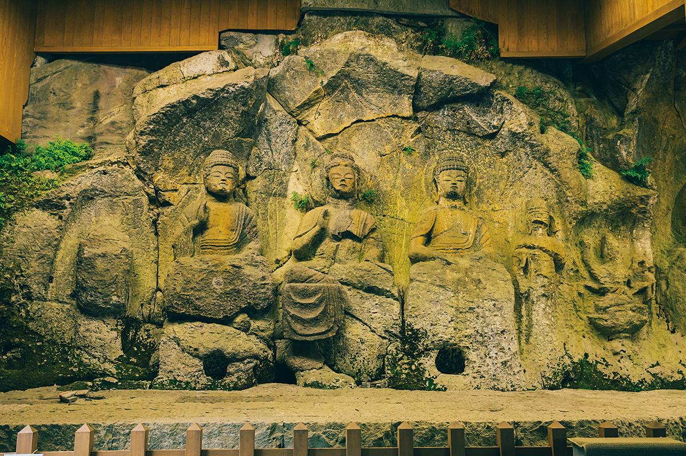
Кто и когда создал каменных Будд Усуки, до сих пор загадка, и легенд об этом несколько. Одна из них рассказывает о Манано-тёдзя, богаче по прозвищу Сумияки Когоро, то есть «угольщик Когоро». Он был сыном выходца из корейского царства Пэкче, который приплыл в Японию искать золотую руду. Когда у супругов умерла дочь, они глубоко горевали и под влиянием китайского монаха обратились к буддизму. Монах выслушал их просьбу, призвал из Китая монахов-строителей и монахов-резчиков, и те высекли в скале Будд, которые останутся навечно. Рядом со статуями до сих пор есть колодец, связанный с легендой, и изваяния самих супругов.
Второй директор туристического центра у каменных Будд, отец гончара, который делает керамику усуки-яки, написал книгу «О чём говорят каменные Будды». В ней он пишет:
«Учение Будды призывает к усердию от далёкого прошлого до будущего. Человек без остановки идёт от детства к юности, зрелости и старости. Каменные Будды это пиктограммы, которые помогают понять жизнь человека. Обходить их лучше так: Фурудзоно, Санносан, первая группа Хоки, вторая группа Хоки»
второй директор туристического центра у каменных Будд
Сегодня обычный маршрут идёт в обратную сторону. Но если пройти его так, как советует книга, и думать о пути человеческой жизни, статуи, возможно, откроются по-новому.
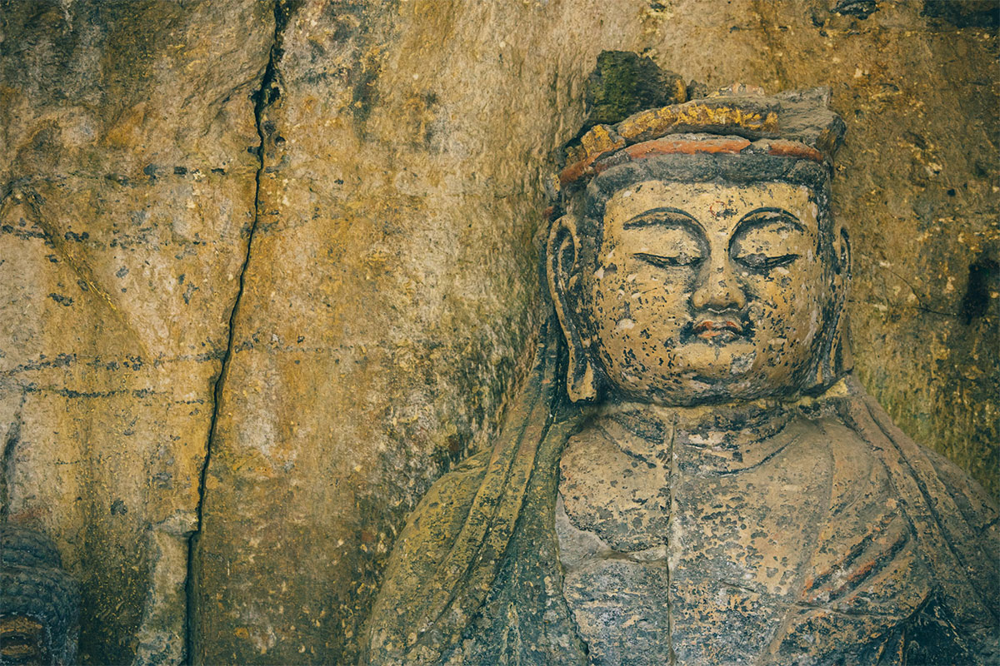
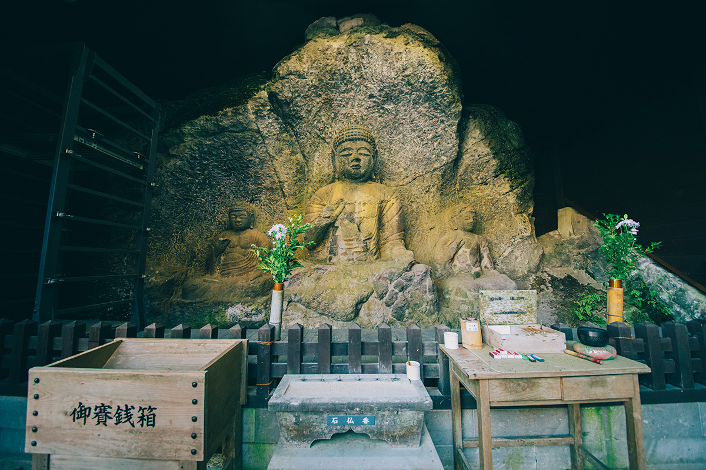
С древности эти места называли «буддийской страной Бунго». Помимо каменных Будд здесь строили храмы разных школ, и буддийская культура расцвела в Усуки раньше, чем во многих других краях. Эта земля молитвы и сегодня бережно принимает гостей.
Каменные Будды Усуки
- Адрес
- префектура Оита, Усуки, Фуката, 804-1
- Телефон
- +81 972-65-3300 (офис, 8:30–17:00)
- Часы работы
- 6:00–19:00, с октября по март до 18:00
- Выходные
- без выходных
- Сайт
- sekibutsu.com
Постная кухня
Обед, который готовит настоятель
На холме в квартале Ниодза старого города стоит «Сэйгэцуан», ресторан постной буддийской кухни сёдзин-рёри. Готовит здесь сам настоятель храма Кэнсё-дзи, семнадцатый по счёту. Его кухня не просто обходится без мяса и рыбы. Для кунжутного тофу настоятель час растирает кунжут вручную, а свежий пшеничный глютен «нама-фу» начинается с того, что тесто из муки полтора часа месят, пока из него не выделится клейковина. Из этого глютена здесь делают множество блюд, к ним подают рисовые лепёшки с дайконом и тушёные сезонные овощи. Работа над каждым блюдом поражает, компромиссов здесь нет.
Вкус, которому восемьсот лет, настоятель дополняет собственными находками. Здесь можно прикоснуться к самой сути постной кухни, и посмотреть на неё приезжали многие известные повара.
«Постная кухня значит, что повар сам старается и совершенствуется, приготовленное подносят Будде, а потом едят как поминальное подношение. Гость ест труд и намерение того, кто готовил»
настоятель храма Кэнсё-дзи
Во времена, когда еды вокруг слишком много, после такого обеда кажется, что очистились и тело, и душа.
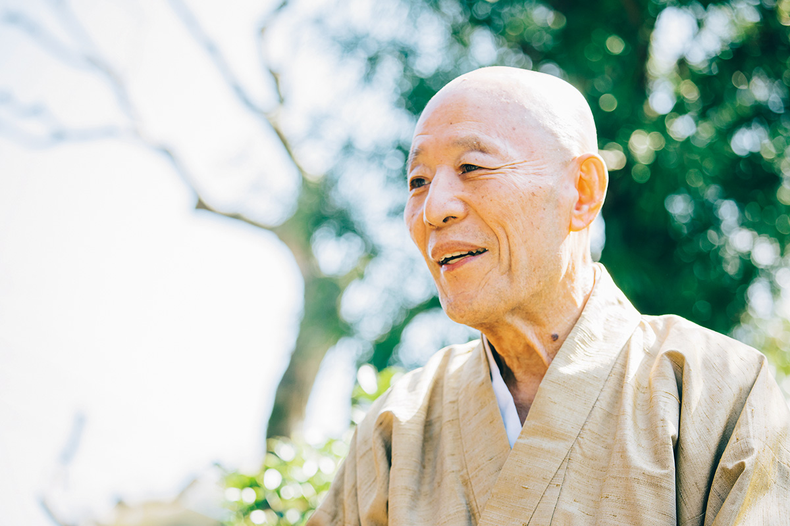
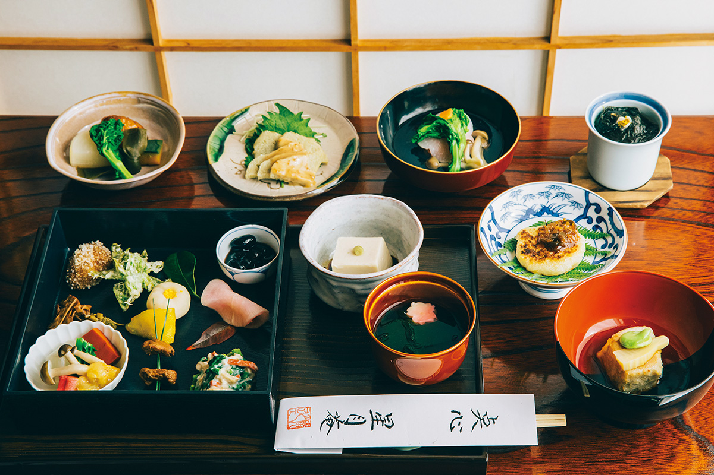
«Сэйгэцуан»
- Адрес
- префектура Оита, Усуки, Ниодза, Кирикоси, 132-2
- Телефон
- +81 972-63-7149
- Часы работы
- 11:30–16:00
- Выходные
- понедельник, вторник, среда (только по предварительной записи, не позднее чем накануне)
- Цены / Вход
- «Сэйгэцу-дзэн» 3880 иен
Ещё в Усуки
Старые улицы, кофе, фугу и овощи
Исторический путь Ниодза
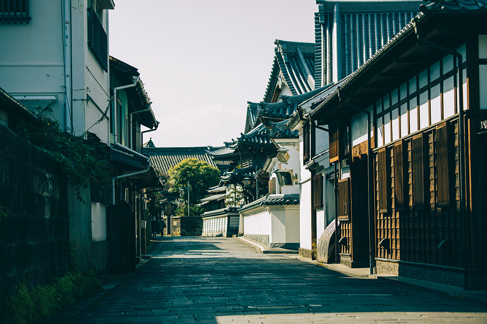
Призамковый город Усуки не пострадал от бомбёжек во время войны, поэтому его облик сохранился особенно хорошо. Неподалёку есть открытые для посещения самурайские дома, и гулять здесь одно удовольствие.
suzunari coffee
Зёрна здесь обжаривают сами и заваривают каждую чашку через бумажный фильтр. Кроме моносортов, в которых чувствуется характер плантации, есть купажи, придуманные как образы, например «Глубокий лес под снегом».
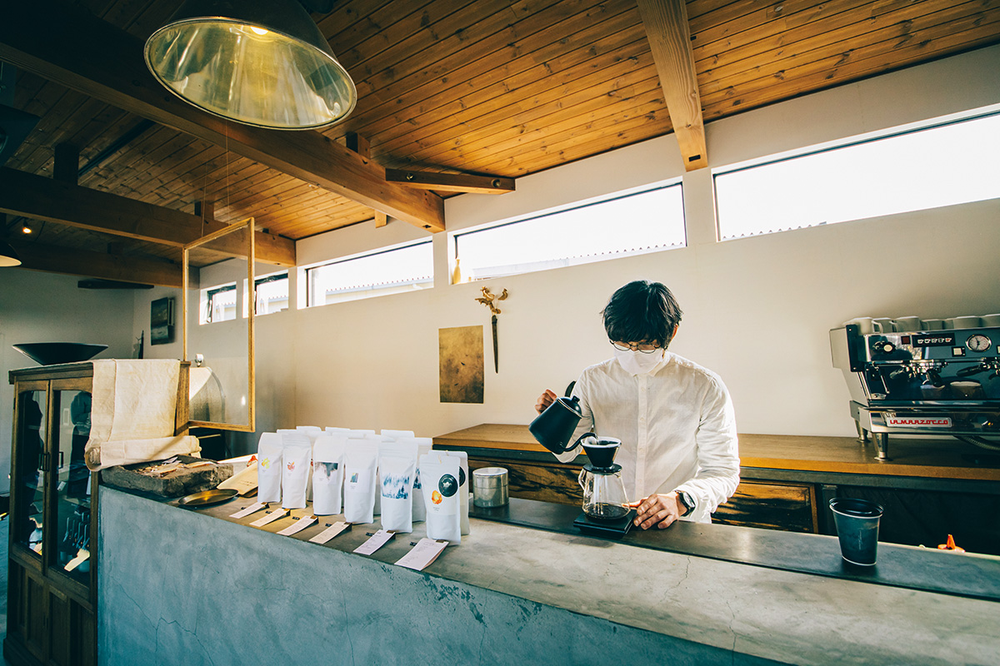
suzunari coffee
- Адрес
- префектура Оита, Усуки, Нода, Мотида, 120
- Телефон
- +81 972-86-9005
- Часы работы
- 11:00–19:00
- Выходные
- среда
Рёкан-рётэй «Сюнкоэн»
Этот рёкан с рестораном работает на месте усадьбы рода Инагава, старших советников князей Усуки. Ужин из фугу Усуки производит сильное впечатление. Ночь с ужином и завтраком стоила от 28 000 иен с налогом и сервисным сбором в 2021 году. Самурайскому дому 200 лет, а сад при нём 400 лет назад разбил Энсю Кобори.
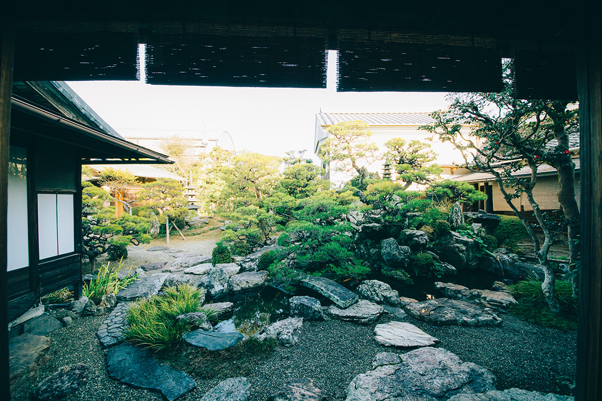
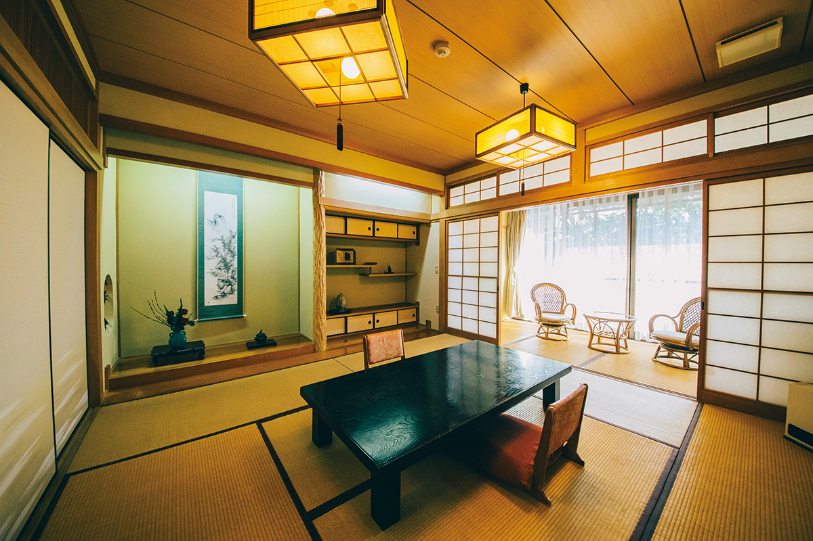
«Сюнкоэн»
- Адрес
- префектура Оита, Усуки, Гион-Ниси-ку, 3-гуми
- Телефон
- +81 972-63-3128
- Цены / Вход
- от 28 000 иен за ночь с ужином и завтраком (с налогом и сервисным сбором)
«Усуки мирай-но сёкутаку»: овощи «хоммамон»
Овощи с маркой «хоммамон» растят на полях, где почву готовят зрелым компостом, без химических удобрений и синтетических пестицидов. Глава хозяйства работает на земле вместе с молодыми людьми, которые приезжают сюда со всей Японии.
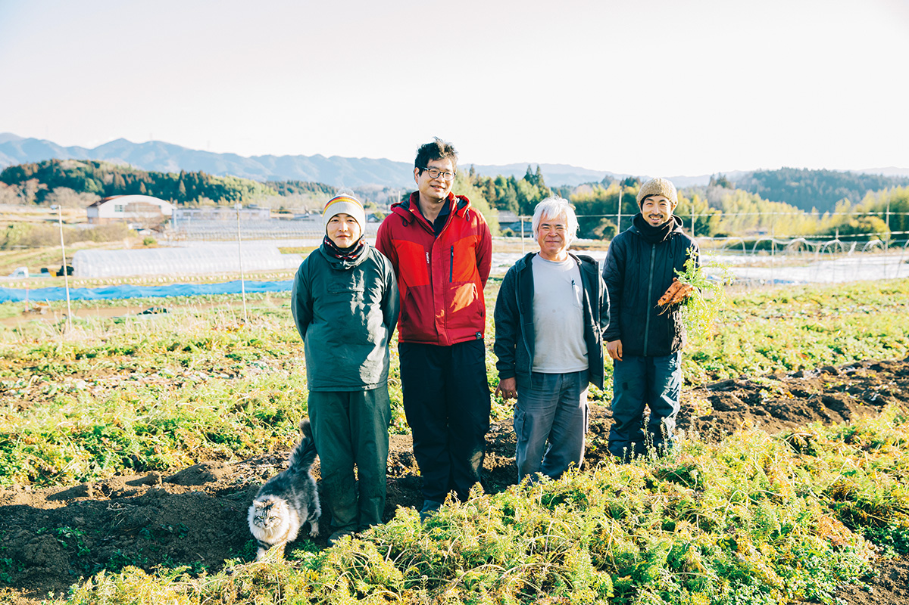
«Усуки мирай-но сёкутаку»
- Адрес
- префектура Оита, Усуки, Нодзу
Фото: Маико Фукуи.